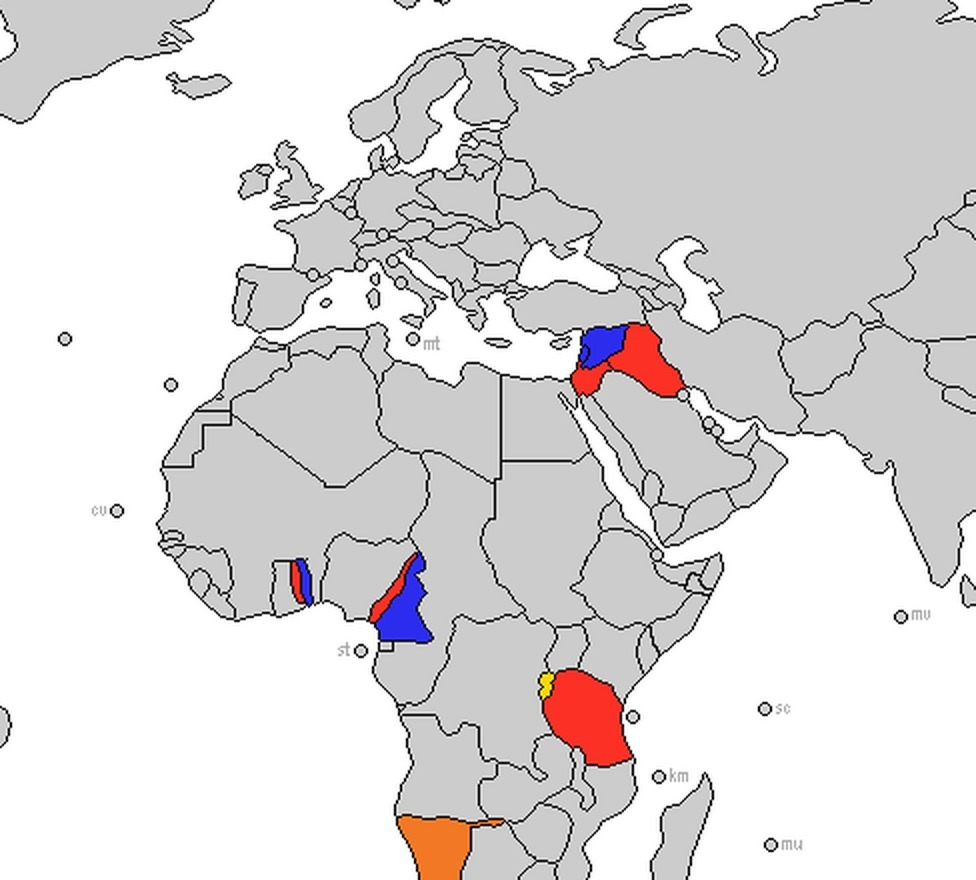

7.5 Unresolved Tensions After World War I
- LO-A: The Paris Peace Settlement created as many problems as it solved: The Treaty of Versailles (1919) imposed war guilt, massive reparations ($33 billion), military restrictions, and territorial losses on Germany, creating humiliation and resentment that Hitler would later exploit. Wilson's Fourteen Points promised self-determination, but the peace treaties drew borders that left Germans in Czechoslovakia, Poles under Germany, and Arabs under British/French mandates rather than independent states. Imperial powers mostly maintained control, but faced growing resistance: Between the wars, Western powers and Japan maintained or expanded their colonial holdings. Britain and France divided former German and Ottoman territories as League of Nations mandates. Japan expanded into Manchuria (1931) and China (1937). But colonial subjects were increasingly organized and resistant, the Indian National Congress, West African anti-colonial movements, and Ho Chi Minh's early Vietnamese nationalism all grew in the interwar period. League of Nations mandates: empire by another name: After WWI, former German colonies and Ottoman territories were not given independence. They became "mandates" administered by Britain and France "on behalf of the League of Nations." Palestine, Iraq, and Syria became British or French mandates. German colonies in Africa (Cameroon, Togo, Tanzania) were divided between Britain and France. Self-determination for white Europeans; continued colonialism for others. Japan's expansion: Manchukuo and the Co-Prosperity Sphere: Japan took advantage of Western weakness during the Depression to seize Manchuria (1931), creating the puppet state of Manchukuo. By 1937, Japan was at war with China. Japan justified its expansion as liberating Asia from Western imperialism (the "Greater East Asia Co-Prosperity Sphere"), but in practice substituted Japanese imperial control for Western.
Try each question before revealing the answer.
1. Woodrow Wilson's Fourteen Points promised national self-determination for all peoples. Why was this principle so difficult to implement in the post-WWI peace settlement?
2. The Treaty of Versailles blamed Germany entirely for WWI (the "war guilt" clause) and imposed massive reparations. Why did this settlement make another war more likely rather than preventing it?
3. The League of Nations mandate system was designed to prepare colonial peoples for eventual self-governance. In practice, how did mandates differ from outright colonies?
4. Japan justified its conquest of Manchuria (1931) as protecting Japanese nationals from Chinese disorder and as part of Asian solidarity against Western imperialism. How convincing is this justification?
5. The Indian National Congress and West African anti-colonial movements both grew significantly in the interwar period. What specific conditions of the interwar years made anti-colonial organizing more possible than before?
- Explain the continuities and changes in territorial holdings from 1900 to the present, including how Western and Japanese imperial states maintained or gained territories and faced growing anti-imperial resistance in the interwar period
Tap a term for its definition.
-
Definition: The peace treaty ending WWI that imposed war guilt, $33 billion in reparations, military restrictions, and territorial losses on Germany. Significance: Created widespread German resentment that Hitler exploited; its failures are considered a key cause of WWII.
-
Definition: The principle that peoples sharing a common national identity have the right to govern themselves. Championed by Woodrow Wilson's Fourteen Points. Significance: Applied inconsistently, granted to European peoples in new states (Poland, Czechoslovakia, Yugoslavia) but denied to colonial peoples in Asia, Africa, and the Middle East.
-
Definition: International organization created after WWI (1919) to maintain peace through collective security and arbitration. The U.S. Senate refused to join. Significance: Proved ineffective, had no military force; failed to stop Japanese expansion in Manchuria (1931) or Italian invasion of Ethiopia (1935); laid the groundwork for the UN after WWII.
-
Definition: The League of Nations framework by which former German and Ottoman territories were assigned to Britain and France to administer "on behalf of" the League toward eventual self-governance. Significance: In practice, a way to divide colonial territories between the victors; Britain received Palestine, Iraq, and Transjordan; France received Syria and Lebanon; German African colonies were divided between them.
-
Definition: The Japanese puppet state established in Manchuria (northeastern China) after Japan's 1931 invasion. Nominally ruled by the last Qing emperor Puyi; actually controlled by Japan's Kwantung Army. Significance: Demonstrated the League of Nations' inability to stop great-power aggression; an early step in Japan's imperial expansion in Asia.
-
Definition: Japan's ideological framework for its Asian empire, claiming to liberate Asia from Western imperialism under Japanese leadership. Significance: Functioned as propaganda cover for Japanese imperial control; in practice substituted brutal Japanese military occupation for Western colonialism.
-
Definition: The major Indian anti-colonial political organization founded in 1885; led in the interwar period by Mohandas Gandhi and Jawaharlal Nehru. Significance: Used non-violent civil disobedience (satyagraha) to mobilize mass opposition to British rule; eventually led India to independence in 1947.
-
Definition: The British and French policy of making concessions to Hitler's territorial demands (especially at Munich, 1938) to avoid war. Significance: Failed to satisfy Hitler and emboldened further aggression; ended with Germany's invasion of Poland (1939) which finally triggered WWII.
⚖️ The Paris Peace Settlement: A Flawed Peace
When WWI ended in November 1918, the victorious Allies gathered in Paris to negotiate the peace. The resulting settlement, primarily the Treaty of Versailles (June 1919), was supposed to create a stable new world order. Instead, it planted the seeds of the next war. The peace was shaped by competing agendas: U.S. President Woodrow Wilson wanted a principled peace based on his Fourteen Points; France wanted to punish Germany and prevent future German aggression; Britain wanted to restore trade and stability.
The treaty's key provisions regarding Germany were harsh: the "war guilt" clause (Article 231) forced Germany to accept sole responsibility for the war, historically inaccurate and politically devastating; reparations of $33 billion; military restrictions (army limited to 100,000 men, no air force, no submarines); and territorial losses (Alsace-Lorraine to France, the Polish Corridor to Poland, colonies distributed as mandates). Most humiliating of all: Germany was not allowed at the negotiating table.
🗺️ New Borders, Old Problems: The Redrawing of Europe
The Paris settlements created a series of new nation-states from the wreckage of the Russian, Ottoman, and Austro-Hungarian empires: Poland, Czechoslovakia, Yugoslavia, Hungary, Austria, Finland, Estonia, Latvia, and Lithuania all emerged from the map redrawing. Wilson's principle of national self-determination was partially applied, populations in contested territories held plebiscites (votes) on which country to join in some cases.
But the application was deeply inconsistent and strategically motivated. The Sudetenland, home to 3.5 million Germans, was assigned to Czechoslovakia because of its industrial and strategic value. The Polish Corridor divided Germany geographically to give Poland access to the sea. Germans in Austria were prohibited from uniting with Germany (Anschluss), despite most wanting to. The result: nearly 10 million Germans found themselves as minorities in new states, many resentful of their situation. Hitler would later exploit these grievances to justify territorial demands and ultimately war.
🌍 The Mandate System: Empire with a New Name
Outside Europe, the Paris settlement was even more clearly a redistribution of imperial spoils. Former German colonies in Africa and the Pacific, and former Ottoman territories in the Middle East, were not given independence. Instead, they became League of Nations mandates, territories "administered" by Britain and France on behalf of the international community, with the nominal goal of preparing them for eventual self-governance.
The mandate assignments:
- Britain: Palestine, Transjordan, Iraq (formerly Ottoman); German East Africa (Tanzania), Cameroon (part), Togo (part)
- France: Syria and Lebanon (formerly Ottoman); Cameroon (part), Togo (part)
- Japan: Former German islands in the North Pacific (Marshall Islands, Carolines, Marianas)
- Australia, South Africa, New Zealand: Former German Pacific and African territories
The mandate system created new problems, especially in the Middle East. In Palestine, Britain had made contradictory promises: the Balfour Declaration (1917) promised support for "a national home for the Jewish people" in Palestine, while the Husayn-McMahon Correspondence had suggested Arab independence in the region. These conflicting commitments created the foundation of the Israeli-Palestinian conflict that continues today.

The League of Nations mandate system divided former German and Ottoman territories between Britain and France. Rather than granting independence, the system extended European colonial control under international legitimacy. AI-generated illustration (Google Gemini, 2025), commercially licensed.
🇯🇵 Japan's Expansion: Manchukuo and the Co-Prosperity Sphere
Japan had been an Allied power in WWI and expected rewards commensurate with its contributions. Instead, the Paris Peace Conference refused Japan's proposed racial equality clause and gave it only German islands in the North Pacific. Japanese nationalists felt humiliated and increasingly believed that Asian nations needed to act independently of Western approval.
In September 1931, Japanese military officers in Manchuria staged the Mukden Incident, a false-flag bomb attack on a Japanese railway, as a pretext to invade Manchuria. The Japanese Army acted without full government authorization; when the League of Nations condemned the invasion, Japan simply withdrew from the League. By 1932, Japan had established Manchukuo, a puppet state nominally ruled by the last Qing emperor Puyi but actually controlled by Japan's Kwantung Army. Japan presented this as rescuing Manchuria from "Chinese chaos" and contributing to Asian solidarity.
Japan's expansion continued through the 1930s. The Second Sino-Japanese War (1937–1945) was one of the deadliest conflicts of the 20th century, killing an estimated 14–20 million Chinese civilians. Japan presented its empire as the Greater East Asia Co-Prosperity Sphere, a bloc of Asian nations liberated from Western colonialism under Japanese leadership. In reality, the Co-Prosperity Sphere meant Japanese military occupation, forced labor, and systematic extraction of resources from Korea, China, Southeast Asia, and the Pacific.
🌱 Anti-Colonial Resistance Grows
Despite imperial powers' efforts to maintain control, anti-colonial resistance intensified throughout the interwar period. Two of the AP CED's required illustrative examples are especially important:
The Indian National Congress, led in the interwar period by Mohandas Gandhi and Jawaharlal Nehru, transformed from an elite petition-writing organization into a mass movement. Gandhi's satyagraha (truth-force, or non-violent civil disobedience) strategy mobilized millions: the Non-Cooperation Movement (1920–22) called on Indians to refuse British goods, resign government positions, and boycott British courts. The Salt March (1930). Gandhi's 240-mile walk to the sea to make salt illegally, defying British salt monopoly laws, became an international symbol of anti-colonial resistance. Britain's response (arresting 60,000 people) demonstrated both the movement's power and colonialism's dependence on violence.
West African resistance took the form of labor strikes, political congresses, and journalism. The National Congress of British West Africa (1920) brought together educated Africans from Nigeria, Gold Coast (Ghana), Sierra Leone, and Gambia to demand greater political representation. In French West Africa, African veterans organized labor strikes and political associations. Blaise Diagne of Senegal became the first Black African elected to the French National Assembly. These movements were building the organizational infrastructure and political consciousness that would drive full independence movements after WWII.
These videos will help you review Unresolved Tensions After World War I and solidify key concepts before your exam.
- The Congress of Vienna's approach to dividing Napoleon's empire among victors
- The Wilsonian principle of national self-determination applied to non-European peoples
- European imperial expansion disguised under international legitimacy
- The League's commitment to preparing all territories for democratic governance by 1930
- preventing Germany from industrializing, which caused mass unemployment and resentment
- permanently dividing Germany into eastern and western zones controlled by France and Britain
- forcing Germany to dissolve its military, leaving it unable to defend itself against Soviet aggression
- creating economic instability and national humiliation that made German populations receptive to Hitler's revisionist nationalism
- it demonstrated that mass non-violent civil disobedience could mobilize millions and expose the violence underlying British colonial authority
- it resulted in the immediate independence of India from British control
- it convinced the British Parliament to grant India dominion status equivalent to Canada
- it triggered a violent confrontation that proved the Indian Army's willingness to fight British forces
- the League of Nations could successfully deter great-power aggression through economic sanctions
- the international order established at Versailles could not prevent great-power aggression when the League lacked enforcement mechanisms
- China's weak republican government had failed to modernize its military adequately
- Japanese industrialization had produced military capabilities superior to any other Asian nation
- Both were primarily armed resistance movements that used violence to challenge colonial authority
- Both were led by returning WWI veterans who organized on the basis of shared military experience
- Both achieved independence for their respective territories during the interwar period
- Both used education, political organizing, and appeals to self-determination principles to challenge colonial legitimacy